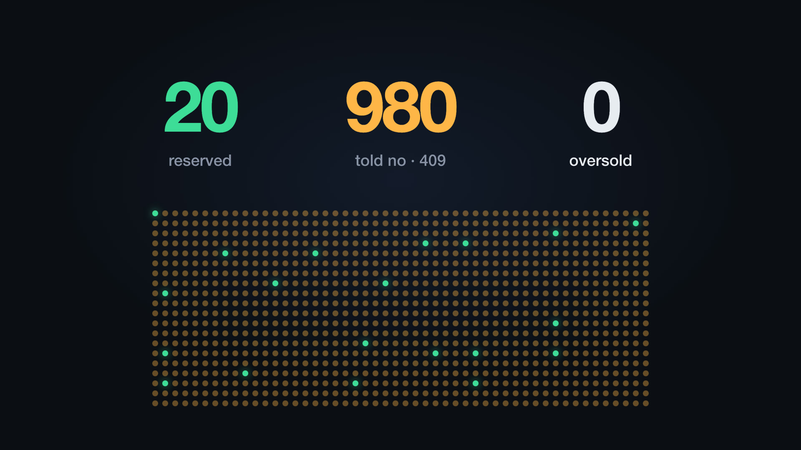
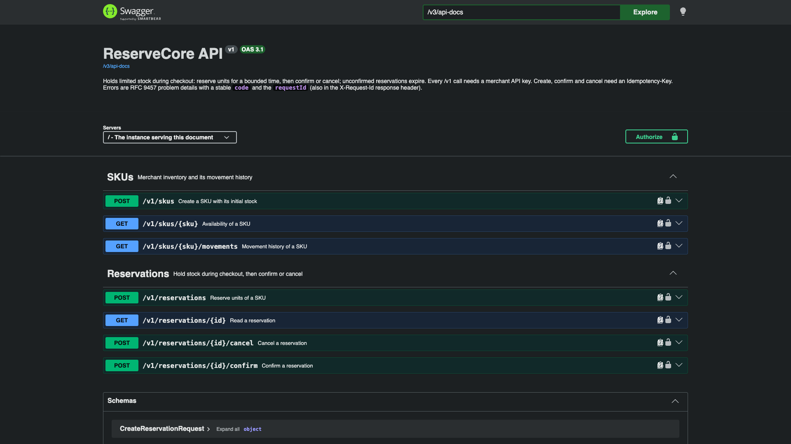

Technical deep dive
Holding limited stock during checkout without overselling, double-applying a request or losing one in a crash.
Spring Boot 4 · Java 25 · PostgreSQL 18

ReserveCore is the HTTP service a storefront calls during checkout. It does not take payments. It owns the stock count, and it has to keep four promises under load.
At most 20 pairs leave the shelf, however many requests race for them.
A retried or duplicated request never reserves a second pair.
A crash at any moment leaves stock exactly as before or exactly as after.
Any number of app instances share one PostgreSQL database.
initial = available + held + sold
Enforced on every write by a CHECK constraint; each quantity is also kept at 0 or more.
| From | Event | To | Stock change |
|---|---|---|---|
| new | reserve, enough available | ACTIVE | available − q, held + q |
| ACTIVE | confirm, before expires_at | CONFIRMED | held − q, sold + q |
| ACTIVE | cancel, before expires_at | CANCELLED | held − q, available + q |
| ACTIVE | worker, at or after expires_at | EXPIRED | held − q, available + q |
CONFIRMED, CANCELLED and EXPIRED are final. Every transition also appends a row to the movement ledger with the quantities after it and the request id that caused it.
Request
POST /v1/reservations
Authorization: Bearer rcsk_devalice_…
Idempotency-Key: checkout-81723
{"sku": "SNKR-10", "quantity": 1,
"holdSeconds": 600}
Response
HTTP/1.1 201 Created
Location: /v1/reservations/01a12e0c-…
{"id": "01a12e0c-…",
"status": "ACTIVE",
"expiresAt": "2026-10-12T10:10:00Z"}
After payment the storefront calls POST …/confirm; on abandon, POST …/cancel; otherwise the hold expires. Every error has one shape, RFC 9457 problem details with a stable code:
409 {"code": "INSUFFICIENT_STOCK", "detail": "Requested 1 of SKU SNKR-10 but only 0 available.", …}

create, read availability, paged movement history
reserve, read, confirm, cancel; writes need an Idempotency-Key
the OpenAPI spec is committed, and a test fails the build when the code no longer matches it
Scenario 1 of 5
T1 SELECT available → 1
T2 SELECT available → 1
T1 UPDATE available = 0
T2 UPDATE available = −1 oversold
UPDATE inventory
SET available = available - :q,
held = held + :q
WHERE sku = :sku AND available >= :q
RETURNING available, held, sold;
T2 waits on T1's row lock. PostgreSQL then re-checks the WHERE clause against the committed row, matches nothing, and T2 gets 409 INSUFFICIENT_STOCK. No application locks, so it holds across every server.
Scenario 2 of 5
First statement of the same transaction
INSERT INTO idempotency_record
(merchant_id, operation,
idempotency_key, request_hash)
VALUES (…)
ON CONFLICT DO NOTHING;
| Situation | Result |
|---|---|
| Retry after the response was lost | Stored response replayed, header Idempotent-Replayed: true |
| 50 copies at the same moment | Copies wait on the key, then replay: 1 reservation |
| Same key, different body | 409 IDEMPOTENCY_KEY_REUSED |
| First attempt failed with 500 | Record rolled back too; the retry runs fresh |
Scenario 3 of 5
Example: the hold expires at 10:10:00.000. Payment finishes at 10:09:59.990, then the confirm waits 15 ms for a row lock.
SELECT … FROM reservation WHERE id = :id FOR UPDATE; -- wait for the lock
UPDATE reservation SET status = 'CONFIRMED', resolved_at = clock_timestamp()
WHERE id = :id AND clock_timestamp() < expires_at; -- time read after the lock
Returns the transaction's start time, so the late confirm would be accepted.
Read after the lock, so the 15 ms count: 409 RESERVATION_EXPIRED.
Boundary test, 7 runs: 30 holds expiring 30 ms ahead, confirms and workers released together. Every hold ended CONFIRMED or EXPIRED, never both.
Scenario 4 of 5
WITH due AS (
SELECT id FROM reservation
WHERE status = 'ACTIVE'
AND expires_at <= now()
ORDER BY expires_at LIMIT 100
FOR UPDATE SKIP LOCKED)
UPDATE reservation r
SET status = 'EXPIRED', resolved_at = now()
FROM due WHERE r.id = due.id;
4 workers, 200 due holds: each expired exactly once, split 60 / 40 / 50 / 50.
Scenario 5 of 5
30
holds active
2 / 2
instances killed with SIGKILL
30 / 30
released, each exactly once
92 ms
after the restarted servers were ready
The holds expired while nothing was running. On restart the first worker passes reclaimed all 30, with exactly one EXPIRED ledger row each.
Why it is safe: every operation is one transaction, so a kill leaves it fully committed or never started, and one lock order everywhere, idempotency record then reservation then inventory, rules out deadlocks.
CHECK (initial_quantity =
available + held + sold)
and every quantity stays at 0 or more
UNIQUE (reservation_id)
WHERE kind IN ('CONFIRMED',
'CANCELLED', 'EXPIRED')
one resolution row per reservation in the ledger
FOREIGN KEY (merchant_id,
inventory_id) REFERENCES
inventory (merchant_id, id)
a reservation cannot point at another store's SKU
API keys look like rcsk_<prefix>_<secret>; only a SHA-256 hash is stored and compared in constant time. Another store's resources answer 404, so the API does not even reveal that they exist.
| Check | Result |
|---|---|
| Integration tests on real PostgreSQL 18 (Testcontainers), no mocks, no sleeps | 61 service + 4 demo tests passing |
| Deliberate bugs: row lock, transaction, stock check, replay, SKIP LOCKED, merchant filter… | 9 of 9 caught (one after tightening a test) |
| Demo: 1,000 requests for 20 units, two instances | 20 reserved · 980 × 409 · 0 unexpected |
| Ledger audit on about 20,500 reservations and a restored backup | 0 discrepancies |
| One hot SKU on a laptop, 50 to 1,000 concurrent clients | 1,900–3,500 req/s mostly refused; 1,100–1,500 reservations/s |
Benchmark: Apple M4, Docker Desktop, two app instances with 10 database connections each; client on the same machine. Raw outputs are kept in docs/benchmark/.
One conditional UPDATE stops overselling.
A stored idempotency key stops duplicates.
Row locks and database time settle races.
SKIP LOCKED makes cleanup safe on every server.